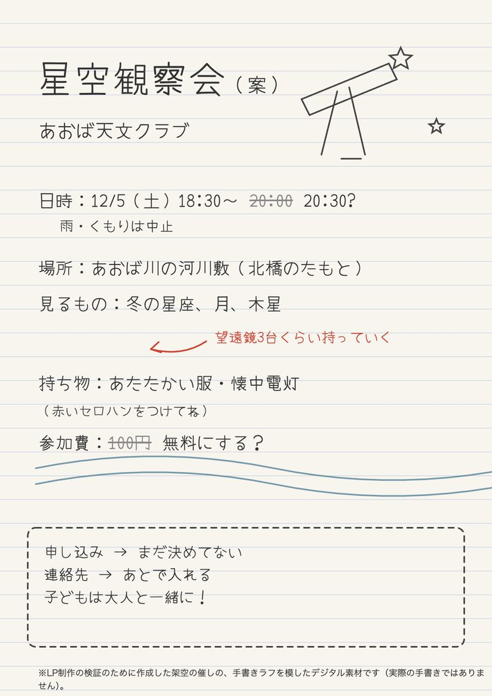
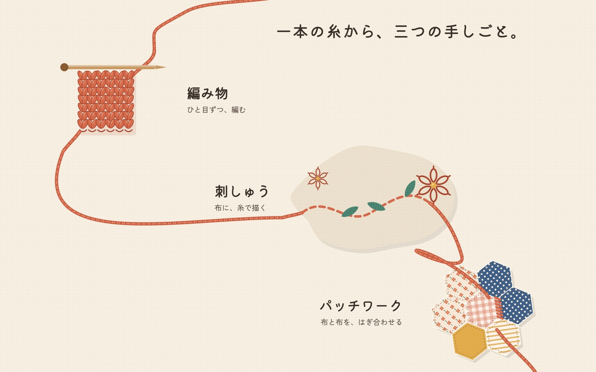
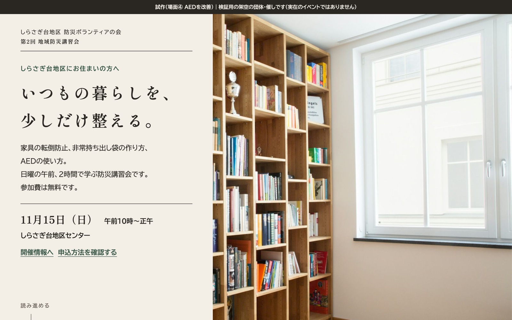
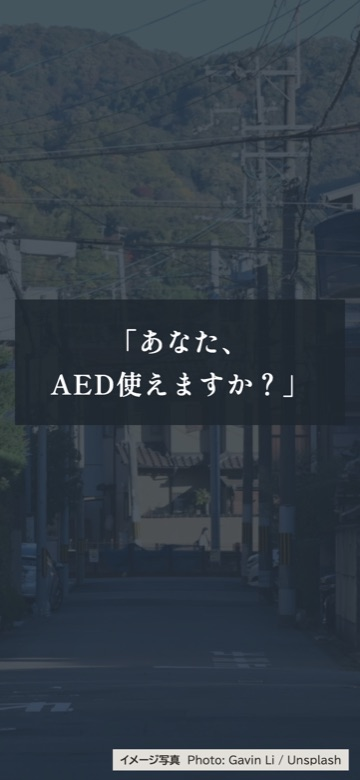
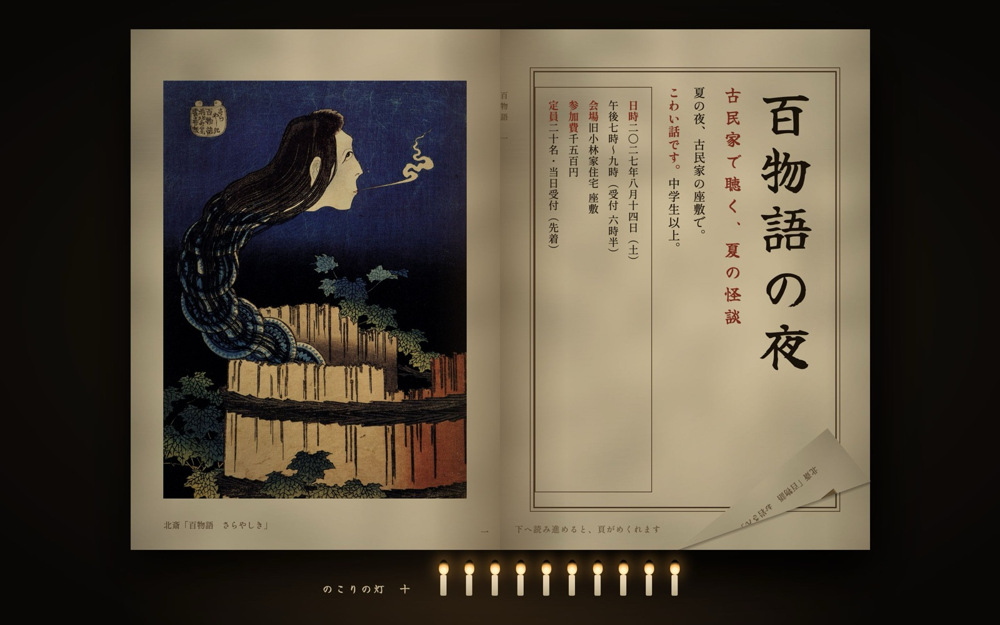
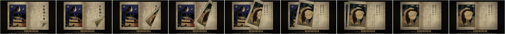
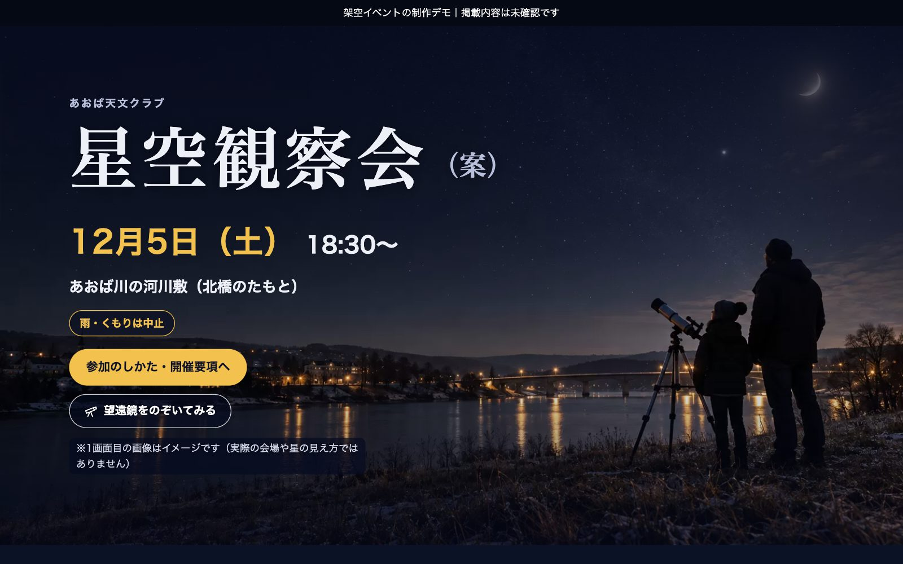
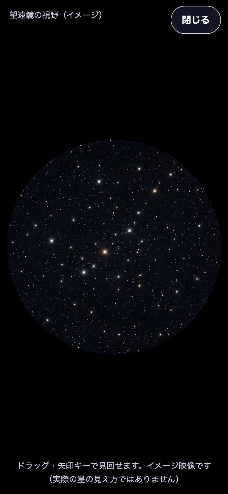
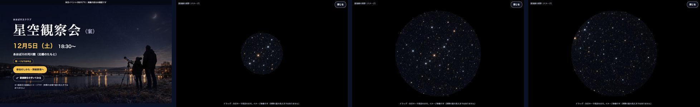

手芸サークルの会員募集
一本の糸
体験型LP・架空デモ
スクロールに合わせて一本の糸が伸びていく
限定公開の試作｜掲載5作品のうち、4作品は架空の団体・催しの制作サンプル、1作品は実在する行政事業の公開情報をもとにした非公式のデザインサンプルです
作品へSELECT WORK / 05
左右にスワイプして作品を選んでください。PCでは矢印ボタンや横スクロールでも選べます。
手芸サークルの会員募集
体験型LP・架空デモ
スクロールに合わせて一本の糸が伸びていく
地域の防災講習会
体験型LP・架空デモ
いつもの暮らしの場面から防災を考える
夏の怪談会
演出デモ・制作途中
和本のページがめくれる演出を体験
行政事業の情報案内
非公式・自主制作サンプル
必要な情報を整理して読みやすく。町の公式サイトではありません
星空観察会の案内

体験型LP・架空デモ
流れ星と望遠鏡をのぞく疑似体験
04は実在する行政事業の公開情報を参考にした非公式サンプルです。チラシの画像は権利未確認のため掲載していません。
01
サークルの会員募集 体験型LP完成候補
ひだまり手芸サークル（架空）
After完成LP

LPを体験する（新しいタブで開きます）スマートフォンでゆっくりスクロールしてみてください
02
地域の講習会の案内 体験型LP試作（審査中）
第2回 地域防災講習会／しらさぎ台地区 防災ボランティアの会（架空）
AfterLP


LPを体験する（新しいタブで開きます）家具 → 持ち出し袋 → AED の順に場面が変わります
03
夏の怪談会の案内 演出デモ制作途中
古民家で聴く、夏の怪談／なつやみ語りの会（架空）
Afterページめくりの演出デモ


この作品は、ページめくり演出のデモ（1回分）です。LP全体は制作途中です。
ページめくりを体験する（新しいタブで開きます）ゆっくり下へスクロール。戻すと前の頁に戻ります
05
星空観察会の案内 体験型LP自主制作サンプル
あおば天文クラブ（架空）
チラシでは伝えきれない「夜空の下で、望遠鏡をのぞく体験」を、Webで先に味わえるページに。
After体験型LP



架空のイベントを題材にした自主制作のデモです。写真と星空の画像は生成したイメージ、流れ星と瞬きは演出で、実際の観測結果や星の見え方ではありません。集客効果は測定していません。
望遠鏡をのぞいてみる（LPを新しいタブで開きます）1画面目の「望遠鏡をのぞいてみる」から。閉じるボタンか Esc キーで戻ります
お手持ちのチラシやイベント情報から、スマートフォンで見やすいランディングページを制作するサービスを準備しています。
チラシの世界観を生かし、スマートフォンで読みやすいページに。日時・場所・申込方法を、迷わず見つけられる形に整理します。演出は必要なものだけ。04のシニア運動習慣サポートが、この形の例です。
題材に合わせた世界観をつくり、スクロールや動きで「体験」するページに。01〜03・05の作品のような表現です。
料金・制作期間・お申し込みの方法は、現在準備中です。このページからはお申し込み・お問い合わせはできません。